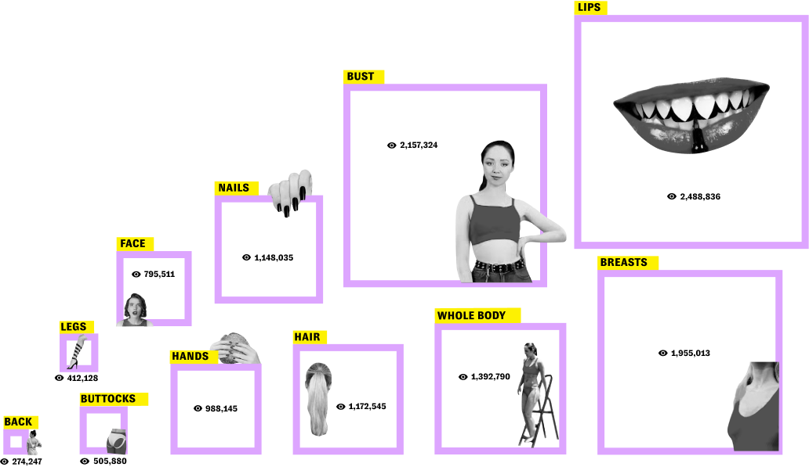
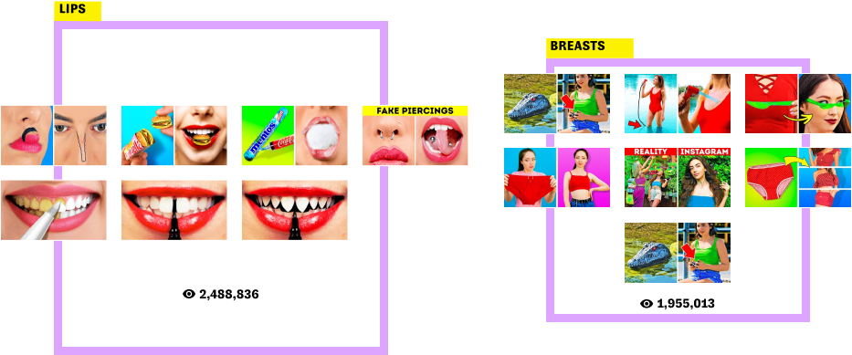

Objectification of women in the media is not a new concept. However, given the channel’s large audience of 70 million subscribers and billions of views, the phenomenon takes an uncomfortable turn. This research seeks to answer if certain body parts have more appeal than others and subconsciously or consciously affect the viewer’s decision to click on it.
In the thumbnails of the last 200 videos uploaded on the channel, it was found that more than half of them contain a female body part, and on the other hand, a negligible percentage contain male body parts.
Counting by average number of views per video, the ranking of most watched videos from high to low is: lips, then bust, breasts, whole body, hair, nails, hands, face, buttocks, legs and back.
The most-watched videos are those with thumbnails containing breasts and open mouth which are female body parts that are associated with intimacy/sexuality, indicating that the views could be higher because of the visual trigger that suggests sexual connotations, even though it does not directly relate to sexuality.
Certain body parts such as the lips, are used in a small number of thumbnails but those videos have gained substantially more views, whereas other generic body parts such as the hands or nails although have been used frequently but have a low number of average views per video.